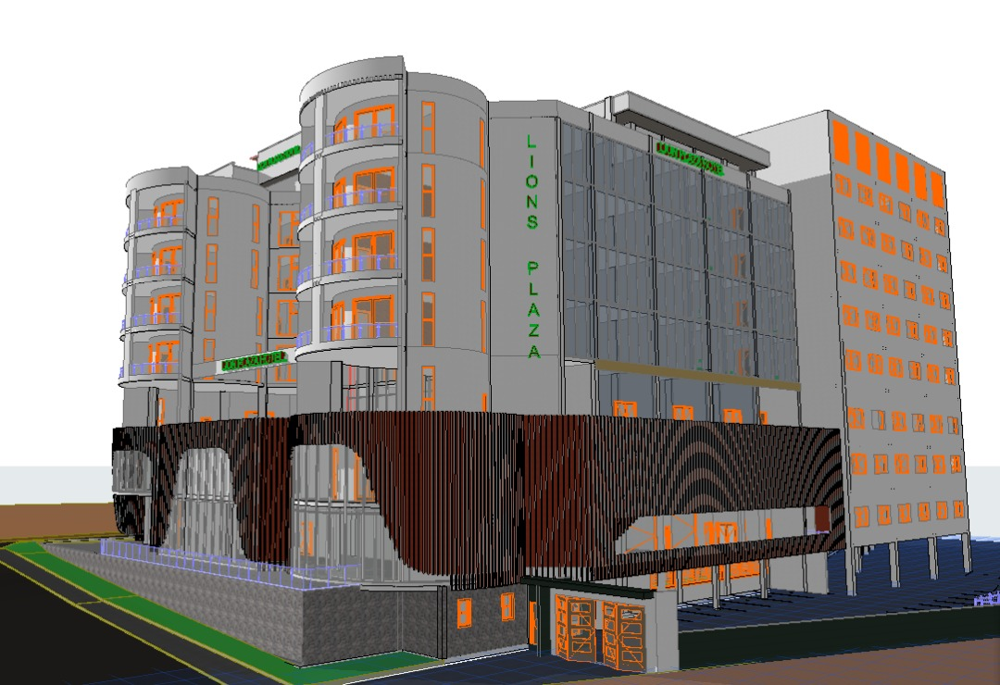
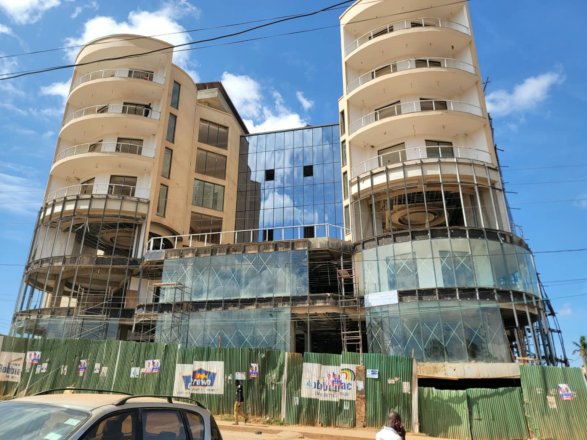
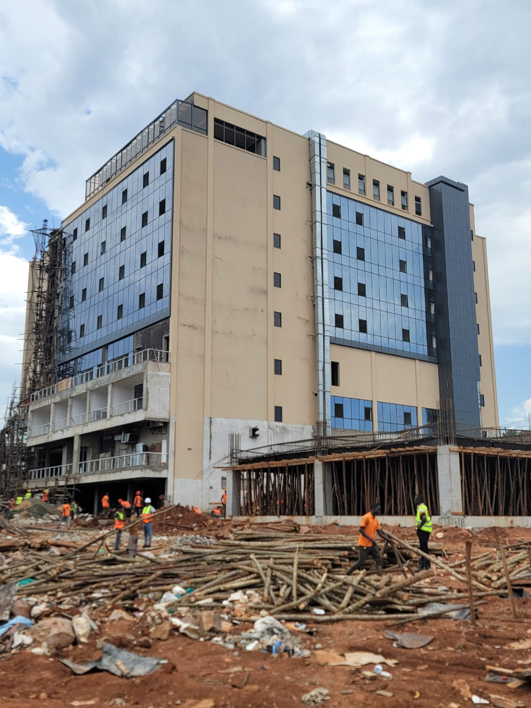
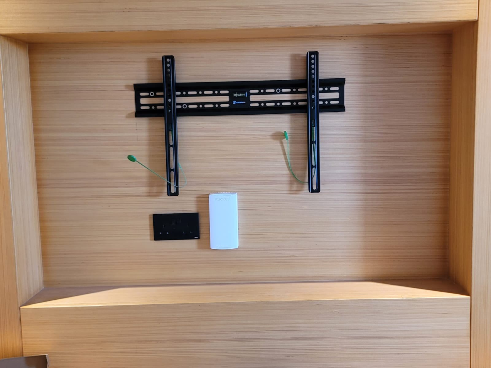
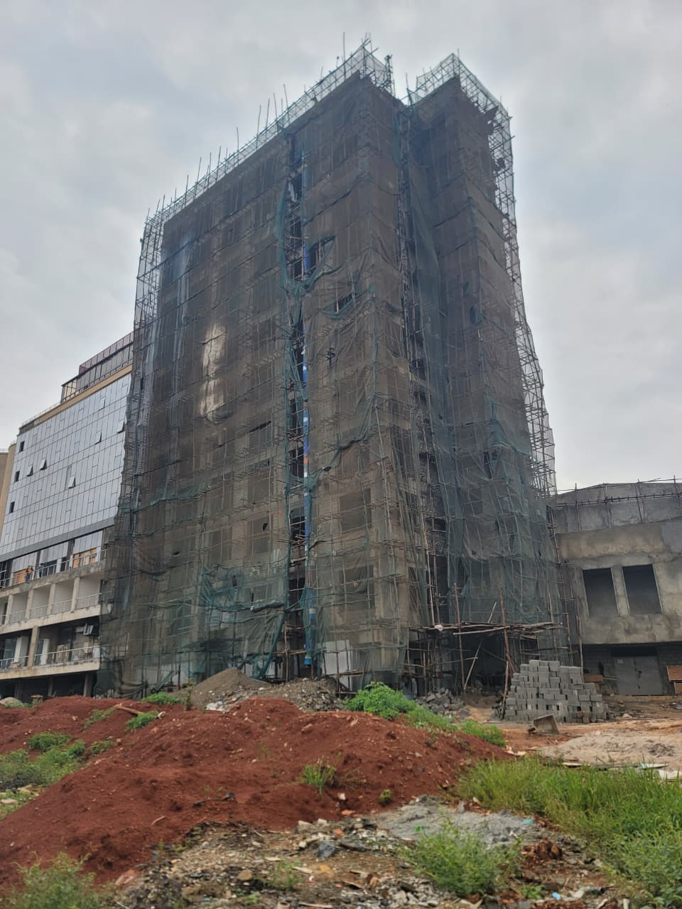

PROJECT 05 • 2026
Lion Plaza Kampala
Hospitality • Kampala, Uganda
Ongoing ICT and ELV infrastructure deployment for Lion Plaza Kampala, covering structured cabling, network infrastructure, Wi-Fi, IPTV, telephony and CCTV across guest floors, public areas and supporting infrastructure.
PROJECT OVERVIEW
Leading ICT infrastructure deployment from cabling to commissioning
Lion Plaza Kampala is an ongoing hospitality technology infrastructure project involving the deployment and preparation of ICT and ELV systems across multiple floors and operational areas of the property.
My involvement has covered hands-on field installation, structured cabling, network infrastructure preparation, IDF development, Wi-Fi infrastructure, IPTV, telephony, CCTV cabling, equipment installation, testing and project coordination.
MY INVOLVEMENT
Team lead and hands-on ICT infrastructure deployment
Leading day-to-day ICT site activities, coordinating the technical team, allocating work, monitoring progress and coordinating with other project teams.
Leading day-to-day ICT site activities, coordinating the technical team, allocating work, monitoring progress and coordinating with other project teams.
Cable tracing, identification, labelling, routing, termination and dressing across multiple floors and operational areas.
IDF preparation, network cabinet assembly, patching, cable management, switch identification and infrastructure readiness across the project.
RUCKUS Wi-Fi infrastructure preparation, including access point cabling and identification across guest rooms, corridors and public areas.
Guest room IPTV infrastructure, TV point preparation and TV bracket installation, supporting the technology requirements of guest rooms and hospitality areas.
Hotel telephony infrastructure cabling and connectivity, including guest room telephone points and routing from AP locations to bedside points.
CCTV infrastructure cabling for guest floors, corridors and fire-exit locations, including cable routing, identification and preparation for system installation.
Cable verification, Fluke testing, fault identification, rectification and quality checks to confirm installation readiness.
ENGINEERING SCOPE
Technology systems deployed
PROJECT GALLERY
From infrastructure to commissioning
Selected project photographs showing site progress, infrastructure installation, construction, and hospitality technology deployment.





PROJECT OUTCOME
Building the technology infrastructure behind a modern hospitality environment
Lion Plaza Kampala is an ongoing project, with ICT and ELV infrastructure progressively being installed and prepared across the property. As ICT Team Lead, I coordinate technical execution on site while remaining directly involved in installation, infrastructure preparation, testing and quality control.
The work is progressively preparing the property for Wi-Fi, network, IPTV, telephony and CCTV systems, with testing, commissioning and final readiness continuing as the project advances.